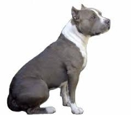

<table border="0" class="layout">
    <colgroup span="1"><col width="15%" span="1"></col><col width="25%" span="1"></col><col width="60%" span="1"></col></colgroup> 
    <tbody>
        <tr>
            <td>
                <div class="holster">
                    <div class="block_container s3 b-text b-static-text user_css_12816005438" id="e_127774467870">
                        <p><em><strong>Новикова Елена Викторовна</strong></em></p>
                        <p>тел. 378-68-12</p>
                        <p><em><strong>Воробьева Наталья</strong></em></p>
                        <p>тел.8-916-270-48-99<br /><span style="display: block; padding: 0px;"></span></p>
                        <p><span style="display: block; padding: 0px;"><a href="http://www.stail-smail.com/">www.stail-smail.com</a><br /></span></p>
                        <p><span style="display: block; padding: 0px;"><br /></span></p>
                    </div>
                    <div class="block_container s3 b-image txt-center" id="e_1282642303411"><span></span></div>
                </div>
            </td>
            <td>
                <div class="holster">
                    <div class="block_container s3 b-text b-static-text user_css_12816005438" id="e_128264208949">
                        <p style="text-align: center;"><strong><span style="color: #0000ff;">Американский стаффордширский терьер</span></strong></p>
                        <p style="text-align: justify;"><span style="color: #0000ff;"><strong>Из истории породы:</strong> порода восходит к середине XIX века, когда в США на основе бультерьеров старого типа сформировался целый ряд пород бойцового направления. В ХХ веке произошло разделение пород на пит-бультерьера, где отбор шёл преимущественно по бойцовым качествам и американского стаффордширского терьера для которого был <strong><a target="_blank" href="http://www.dog.blister.ru/dog-seil.files/am2.jpg"></a></strong>разработан стандарт. В 1936 году порода была зарегистрирована в AKC под названием "стаффордширский терьер". В этом же году был образован STCA - Staffordshire Terrier Club of America. Его первым президентом и автором стандарта породы стал Уилфред Брендон. Этот клуб вошел в состав АКС. В это время часть американских заводчиков, делавших упор на бойцовские качества, не вносили своих собак в племенную книгу АКС, а продолжали регистрировать их в UKC под названием "американский пит-бультерьер". Кстати, в настоящее время "американского пит-бультерьера" не признает не только FCI, но и АКС. Таким образом, в Америке сложилась ситуация, когда одинаковые собаки, принадлежащие к одной породе, в зависимости от клубной принадлежности, стали называться по-разному, а значит, и относиться к разным породам. В АКС основной упор делался на улучшение экстерьера и характера собак. В 1972 году АКС внес изменение в название породы. Она стала называться "американский стаффордширский терьер".</span></p>
                        <p style="text-align: justify;"><span style="color: #0000ff;"><strong>Общая характеристика породы:</strong> собака уравновешенная, энергичная, смелая, живая и подвижная. Агрессивна к другим собакам и насторожена к посторонним. Её несомненные качества: сила, мужество, преданность хозяину, надёжность, бесстрашие, общительность. Хорош в качестве телохранителя, способен защитить своего хозяина и умеет быть верным и ласковым другом.</span></p>
                        <p style="text-align: justify;"><span style="color: #0000ff;"><strong>Содержание и уход:</strong> для нормального развития требуется активный моцион. Амстафф - первоклассный крысолов и отличный спутник в походах, способный, однако, и ужиться в комнатных условиях, если только его регулярно выгуливать. На прогулке следует держать под контролем во избежание драки с другими собаками. Эта собака не требует особого ухода за шерстью, кроме ежедневной чистки щёткой.</span></p>
                        <p style="text-align: justify;"><span style="color: #0000ff;"><strong>Размеры</strong>: рост 46-48 (кобели), 44-46 (суки), вес 18-26 кг.</span></p>
                        <p style="text-align: justify;"><span style="color: #0000ff;">____________________________________</span></p>
                        <p style="text-align: justify;"> </p>
                    </div>
                </div>
            </td>
        </tr>
    </tbody>
</table>​
